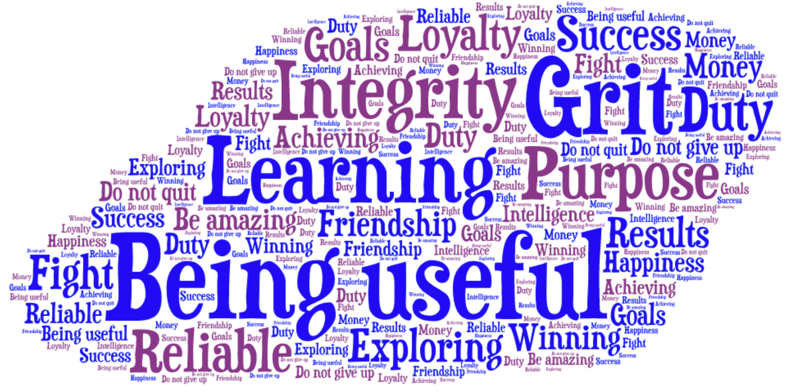
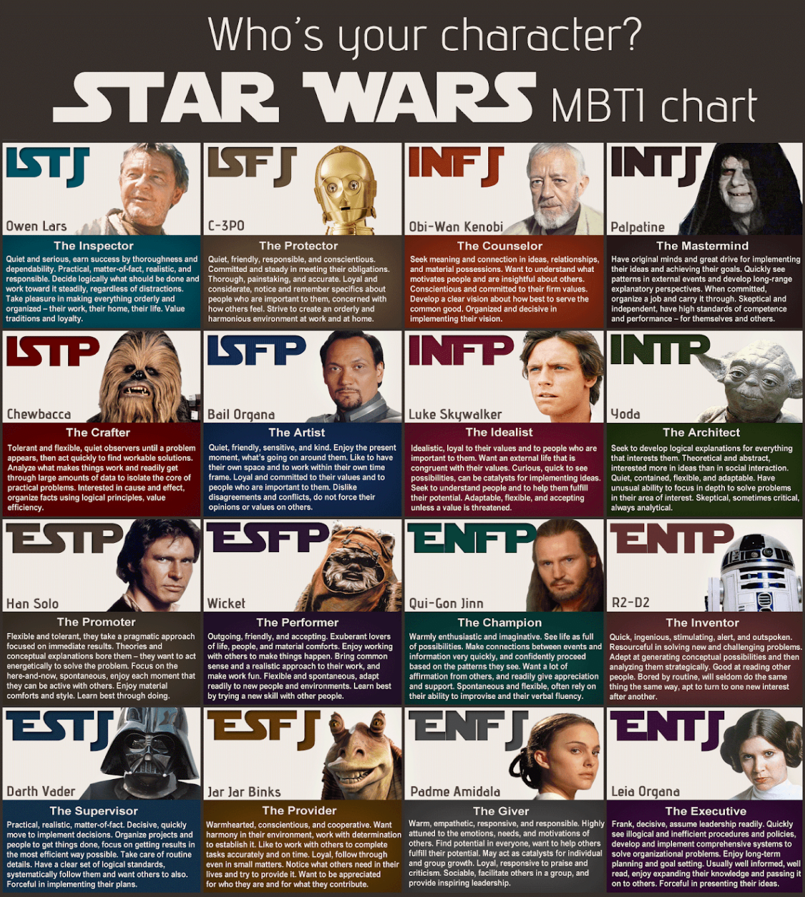
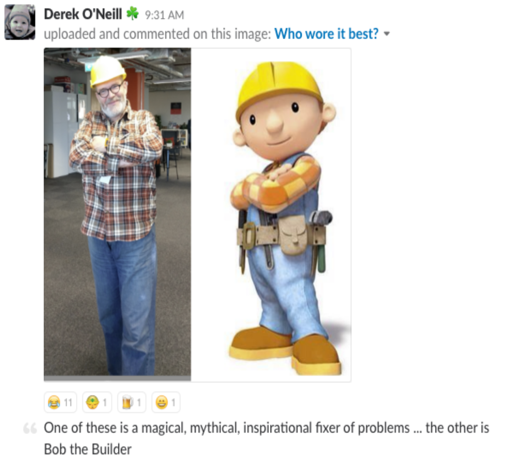
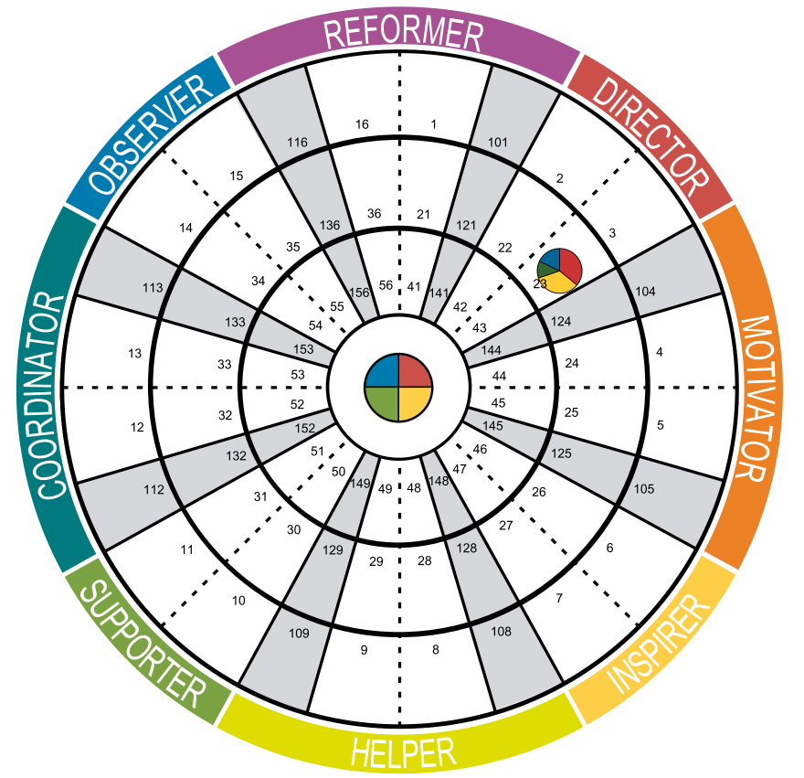
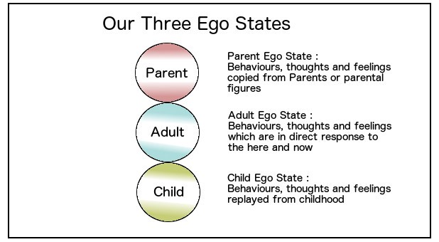

Roland
(THE User Manual)
Roland Tritsch
Created: 2020-06-28 Sun 11:05
Manager
Building functional teams and functional systems
Making engineers grow and users smile
Software Engineer
Functional Programming
SaaS Backends
Shared-Nothing Micro-Services Architectures
- Using events to propagate state
Husband & Father
Believes & Values
MBTI - Leia & Darth
- ENTJ & ESTJ
- Extroverted (strong)
- Thinking (strong)
- Judging (strong)
- Sensing/Intuition (50/50)
- The Executive & The Supervisor
- Princess Leia & Darth Vader

MBTI - Bob & Tom
Can we do/fix it? Yes, we can!
DISC - Motivating Director
Ego State
- Balanced :)
- Strong child ego
- CTO, playing, learning, taking risk, falling (and getting up again), curious, …

Leadership
Leadership comes down to believing so strongly in the future you want that your enthusiasm, confidence, and drive in getting there infects those around you and the reality of today transforms into that vision of tomorrow through shared work and sacrifice.
Max Levchin
Introduction
- What do you do? Role? Responsibilities?
- Why are you here?
- What is your superpower?
Superpower
My superpower is that I am very good at helping people to discover and develop their superpower(s).
I am good at/I like to …
- Building and running functional teams and functional systems
- Making engineers grow (put value on CVs) and users smile (deliver value to customers)
- Find and articulate a mission that makes a difference, attract and retain great people and then … execute!
- Raising the bar!

(Naturally) I am/can be …
… loud & obnoxious …
… impatient & hot-tempered …
… and I need to use some of my energy to moderate that!
Means …
… when I am running low on energy or when I am tired … sooner or later/occasionally … somebody has to sing a lullaby!!!
I (also) need help with …
… diving into the details!
… turning a strategy into tactics!
… listening (talking too much)!
… going slow (to go faster)!
Little known fact

Q&A
Appendix
Resources
I like …
Grit, showing up, hard work (doing what's right, not what's easy/popular), …
Talking to each other, not about each other, …
No surprises
- I will miss the deadline next week vs. I will miss the deadline tomorrow
Ownership & accountability
- Say what you do & Do what you say
- I f…ed-up … and here is what I am going to do about it
Being on time, being reliable, say-what-you-do/do-what-you-say, making promises and keeping them (and if not … appologize, learn … and move on), …
Productive friction, disagree and commit, radical candor, …
Do the right thing and do it right (with urgency)
Building a place where great engineers can do their best work
- Where … talent meets passion and purpose
- Where … mastery meets autonomy and purpose
- Where … accountability meets autonomy and authority
Good hiring
- Nice/decent, humble/ego-less, intelligent people
- That like to solve problems (and are good at it)
- With good judgement (and a lot of common sense)
- And good desicion making skills (using groups of people)
(and that are passionate about software engineering and writing good, maintainable code)
(and that have a growth mindset)
Strategic thinking/planning
- Develop a sense of direction
- … for the next N steps/time-units
- Execute on the first step/time-unit
- Rinse and repeat
(if you have no idea, where you want to go …
… every direction is wrong)
Software Gardening and not hiting icebergs
Fixing broken windows
The Power of Why
Functional Programming
Synergy between Product and Engineering
- Build the right thing and build it right
- Understand what the customer wants/needs and complement it with what's possible
- Do not build faster horses
Cameradery …
- we are in it together
- we have each others back
… to be useful
… to complement (not compete)
- be the oil in the gearbox
- be(come) the missing puzzle-piece